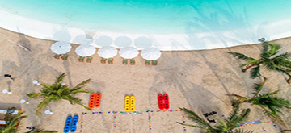

Hà Nội - Nghìn Năm Văn Hiến
Lăng Chủ tịch Hồ Chí Minh
Lăng Chủ tịch Hồ Chí Minh là nơi giữ gìn thi hài Bác-người cha già kính yêu của dân tộc.Lăng được khởi công vào ngày 2/9/1973 và hoàn thành vào ngày 19/8/1975. Công trình cao 21.6m rộng 41.2m, được làm hoàn toàn bằng nhiều loại đá quý hiếm khác nhau. Nhìn tổng thể, lăng như một bông sen cách điệu. Lăng trở thành một điểm đến nổi tiếng mà bất kì ai khi đến du lịch Hà Nội đều muốn ghé thăm. Đến đây du khách không chỉ được chiêm ngưỡng kiến trúc đặc biệt này mà còn được tận mắt nhìn thấy Bác đang yên giấc ngủ.

Lăng Chủ tịch Hồ Chí Minh - Quận Ba Đình
Văn Miếu - Quốc Tử Giám
Văn Miếu - Quốc Tử Giám vốn là trường trung học cổ của Kinh Thành Thăng Long và trường đại học đầu tiên ở Đông Nam Á. Văn Miếu không chỉ một di tích lịch sử, văn hóa cổ mà còn là nơi diễn ra các hoạt động, sự kiện đậm đà bản sắc của người dân Thủ đô. Bên trong còn lưu giữ nhiều hiện vật quý như: chuông Bích Ung đại chung, tượng Khổng Tử và 82 bia ghi tên những người đỗ Tiến sĩ,...Ngày nay, Văn Miếu-Quốc Tử Giám là nơi tham quan của du khách trong và ngoài nước đồng thời cũng là nơi khen tặng cho học sinh xuất sắc và còn là nơi tổ chức hội thơ hàng năm vào ngày rằm tháng giêng. Đặc biệt, đây còn là nơi các sĩ tử ngày nay đến "cầu may" trước mỗi kỳ thi quan trọng.

Văn Miếu - Quốc Tử Giám - Quận Đống Đa
Hồ Gươm
Hồ Gươm hay còn gọi là Hồ Hoàn Kiếm. Theo truyền thuyết, trong một lần vua Lê Lợi dạo chơi trên thuyền, bỗng một con rùa vàng nổi lên mặt nước đòi nhà vua trả thanh gươm mà Long Vương cho mượn để đánh đuổi quân Minh xâm lược. Nhà vua liền trả gươm cho rùa thần và rùa lặn xuống nước biến mất. Từ đó hồ được lấy tên là hồ Hoàn Kiếm. Mặt hồ trong xanh soi bóng những hàng cây cổ thụ, những rặng liễu thướt tha, những mái chàu, đền, tháp rêu phong, cổ kính và cả những tòa nhà mới cao tầng. Tới đây, bạn có thể dạo quanh một vòng ngắm nhìn khung cảnh êm đềm của hồ, hít bầu không khí trong lành.

Hồ Gươm - Quận Hoàn Kiếm
Hồ Tây
Hồ Tây có diện tích rộng hơn 500 ha với bề dày lịch sử mấy nghìn năm tạo nên chất thơ cho Hà Nội. Xung quanh hồ có nhiều thắng cảnh: Chùa Trấn Quốc, Đình Nghi Tàm, Phủ Tây Hồ, Đền Quán Thánh và Chùa Bà Đanh. Đặc biệt những địa điểm này còn được xếp vào danh sách top 25 ngôi chùa thiêng nhất ở Hà Nội. Đến đây bạn vừa được tham quan vừa rời xa cuộc sống xô bồ, tấp nập để thả lỏng tâm hồn vào không gian thiêng liêng, thoãng đãng vô cùng.

Hồ Tây - Quận Tây Hồ
Đồng Mô
Đồng Mô bao gồm một hồ chứa nước rộng khoảng 500 ha, nằm trong vùng chân núi Ba Vì, các khu nghỉ dưỡng nằm rải rác trên các hòn đảo trên hồ. Khách du lịch tới đây được đi tham quan lòng hồ, ngắm cảnh núi non hùng vỹ, sơn thủy hữu tình và các dịch vụ câu cá, ẩm thực theo phong cách dân tộc. Đặc biệt trong khu du lịch Đồng Mô có một sân golf nổi tiếng: Sân golf Đồng Mô - 36 lỗ nằm trên các đảo ở giữa hồ Đồng Mô.

Đồng Mô - Huyện Ba Vì
Ocean Park
Ocean Park là đại đô thị đẳng cấp quốc tế mang phong cách Singapore, được xây dựng bên cạnh thị trấn Trâu Quỳ, huyện Gia Lâm, Hà Nội. Sở hữu không gian xanh rộng lớn từ hơn 100 ha cây xanh, mặt nước cùng những bãi cát trắng trải dài với hàng dừa rợp bóng, Ocean Park Gia Lâm mang đến một chất sống “đại dương” cũng như điểm giải trí tham quan thu hút, nơi bạn có thể tìm lại sự bình yên trong tâm hồn giữa chốn thủ đô đầy ồn ào, đông đúc…
